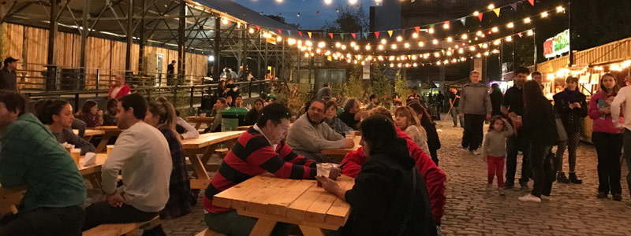

¿Dónde comer? En este buscador, vas a poder filtrar por nombre, tipo de establecimiento y por barrio ver más
 Mercados y patios Gastronómicos Conocé los patios y mercados en donde podés disfrutar de la mejor gastronomía de la ciudad Ver más